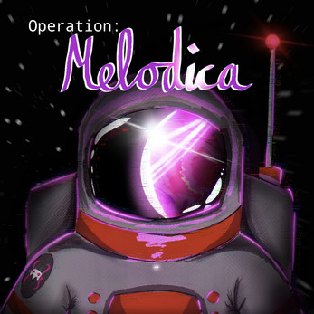
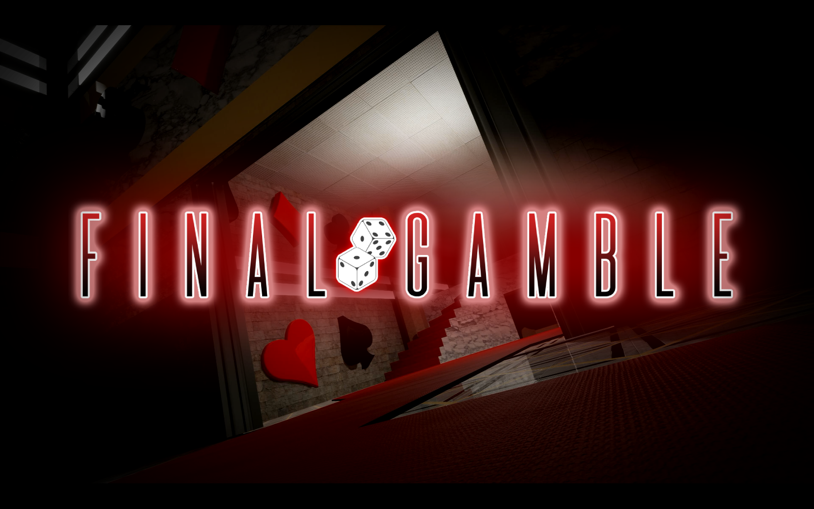
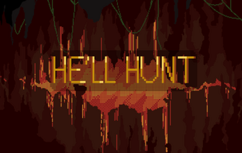

Computer Science Student & Developer
Hi, I'm Taym.
I build software, game prototypes, and creative projects. My interests include game development, web development, algorithms, and building useful tools.
About Me
I'm Taym Atrach, a dedicated student at McGill University, where I am pursuing a double major in Computer Science and Hispanic Studies with a supplemental Computer Science minor. Previously, I specialized in Interactive Media Arts at Dawson College. Since I was young, I've had a strong passion for creation. My journey into video game development began in childhood, and that passion continues to grow today. My goal is to create immersive experiences that allow people to escape reality for a moment and enter new worlds. Through my studies in computer science, I focus on the technical and creative sides of game development, including game engines, user interfaces, level design, gameplay mechanics, and interactive systems. In my creative work, I aim to build original experiences by combining technical problem-solving with artistic storytelling. Collaboration is also an important part of my process because I enjoy working with other creatives, sharing ideas, and learning from different perspectives.
Projects

🏆 Award Winner
Operation: Melodica
Award-winning Unity game that combines music, action, and level design.

Final Gamble
A narrative-driven horror experience built in Unreal Engine 5.

He'll Hunt
McGameJam 2026 Submission